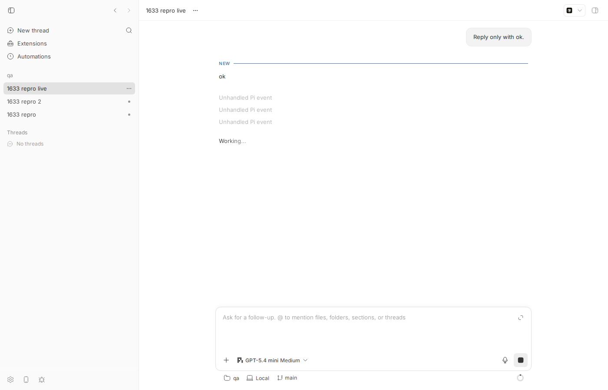
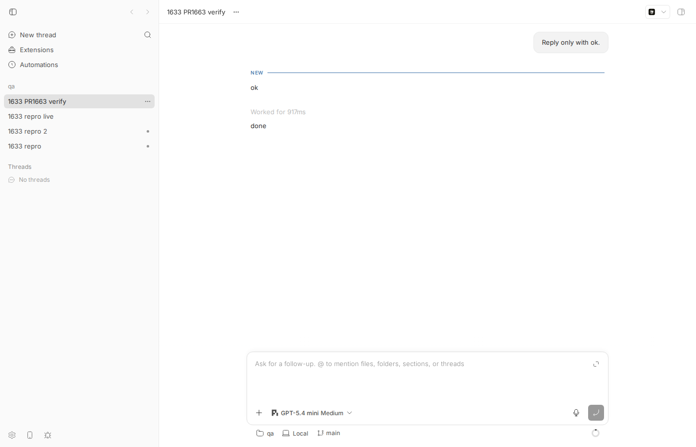

#1633 · Pi extension-triggered turn stays working after agent_end
TL;DR
Plain-language framing. bb runs the Pi coding agent inside its host daemon and translates Pi's SDK events into bb "thread events". Pi's agent_end event is what tells bb "this run is over", and it carries the full list of messages produced during the run. Pi extensions (user-installed plugins for Pi, such as pi-processes) can inject their own messages into a run and can even start a run on their own while the agent is idle (pi.sendMessage(…, { triggerTurn: true })). Pi's types allow those extension messages to carry plain string content instead of an array of content blocks.
What the user sees. After a pi-processes background process finishes with onSuccess: "turn", Pi runs a turn, the model answers, and the bb thread keeps showing Working… forever (plus "Unhandled Pi event" rows), until the user presses Stop.
What is actually wrong. bb's zod schema for the messages inside agent_end (piConversationMessageSchema) only accepts content: array. One string-content custom message anywhere in agent_end.messages makes the whole agent_end fail validation, so the translator emits provider/unhandled instead of turn/completed. Turns that bb itself started have a safety net (pi/prompt/settled, fired when the SDK's prompt() promise resolves) that still closes the turn; extension-triggered turns are started by Pi, not by bb, so nothing else ever closes them. I reproduced this live on the base commit with a 20-line Pi extension (thread stuck active for minutes) and with a unit test that fails on main; PR #1663 fixes both, verified live too.
Claims vs findings
| Claim | Status | Evidence |
|---|---|---|
| Pi 0.84.0 permits string content for user and custom messages | Verified | node_modules/@earendil-works/pi-coding-agent/dist/core/messages.d.ts: CustomMessage.content: string | (TextContent | ImageContent)[]; pi-ai/dist/types.d.ts: UserMessage.content: string | (…)[]. Pi itself always builds array content for the user messages it creates from prompt/steer/follow-up (agent-session.js lines ~870, ~1020, ~1036), so only extension-injected messages carry strings. |
The adapter validates each agent_end.messages[] item with an array-only content schema | Verified | event-translation.ts#L171-L180: content: z.array(piMessageContentBlockSchema).optional(). |
Invalid schema rejects the whole agent_end; bb reports sdk/agent_end as provider/unhandled, no turn/completed | Verified | Unit repro: on main the only event emitted is provider/unhandled. Live repro: event seq 17 provider/unhandled rawType=sdk/agent_end, no turn/completed, thread status active 3+ minutes later. |
| Client-started turns have a separate settlement path; extension-triggered turns do not | Verified | startPiPrompt in bridge.ts#L781-L800 emits pi/prompt/settled when session.prompt() resolves; the translator turns that into turn/completed (event-translation.ts#L578-L605). An extension-triggered run goes through Pi's sendCustomMessage → _runAgentPrompt, which bb never awaits. |
| bb shows the thread as working until the user stops the turn | Verified | Screenshots below ("Working…", spinner in the sidebar); API status: "active" until stopped. |
| Reporter's fix commit (bee15e5e) makes the regression test pass | Verified (as PR #1663) | Same one-line schema change; my repro test passes on the PR branch and the live thread completes. |
| Versions bb 0.37.0 / pi-processes 0.10.9 | Unverifiable | I did not install pi-processes; I used a minimal extension that calls the same pi.sendMessage(…, { triggerTurn: true, deliverAs: "steer" }) API with string content. The base commit (and origin/main) still has the array-only schema, so the bug is present at HEAD. |
Environment
- bb
16ceb3a54(main, 2026-08-18); origin/main checked: no later commit touchespiConversationMessageSchema(still array-only atorigin/main). - Linux 7.0.0-29-generic, node v24.18.0,
@earendil-works/pi-coding-agent0.84.0 (bundled Pi SDK), modelopenai-codex/gpt-5.4-minivia Pi. - Dev instance from worktree
/home/sawyer/projects/bb/.claude/worktrees/wf_242c3e11-a10-16: app:16092, server:24092, host daemon:32092, data dir/home/sawyer/.bb-dev/projects-bb-.claude-worktrees-wf_242c3e11-a10-16-b213f7e4159a. Projectproj_xzn7fe9jg8(local path/tmp/bb-1633-repo, hosthost_zghph24xad). Threads:thr_e5bc7nvaza(bug, main),thr_mzntkjbu5a(PR #1663). - Pi loads user-scope extensions from
<agentDir>/extensions; project-scope.pi/extensionsneed a trust decision that the bb bridge cannot prompt for (my first attempt with a project-scope extension was silently not loaded). To avoid touching~/.pi, the host daemon was started withPI_CODING_AGENT_DIR=/tmp/bb-1633-piagent(a scratch dir containing a copy ofauth.json,models-store.json,settings.jsonandextensions/string-turn.ts; deleted afterwards).
Minimal reproduction
A. Unit test at the exact code path (fails on main)
File: 1633/repro/issue-1633-repro.test.ts. Copy it to packages/agent-runtime/src/pi/ and run:
cd packages/agent-runtime && pnpm exec vitest run src/pi/issue-1633-repro.test.ts
// Repro for get-bb/bb#1633: Pi agent_end that carries a custom message with
// STRING content (as pi-processes sends via pi.sendMessage) is rejected by the
// bb schema, so no turn/completed is emitted and the thread stays "working".
import { describe, expect, it } from "vitest";
import { turnScope } from "@bb/domain";
import type { AgentSessionEvent } from "@earendil-works/pi-coding-agent";
import { createPiEventTranslator } from "./event-translation.js";
type AgentEndMessages = Extract<AgentSessionEvent, { type: "agent_end" }>["messages"];
const assistant = (text: string): AgentEndMessages[number] => ({
role: "assistant",
content: [{ type: "text", text }],
api: "anthropic-messages",
provider: "anthropic",
model: "claude-haiku-4-5",
usage: {
input: 10,
output: 5,
cacheRead: 0,
cacheWrite: 0,
totalTokens: 15,
cost: { input: 0, output: 0, cacheRead: 0, cacheWrite: 0, total: 0 },
},
stopReason: "stop",
timestamp: 1777995781000,
});
function run(messages: AgentEndMessages) {
const translator = createPiEventTranslator({ providerId: "pi" });
const context = { threadId: "pi-thread-1" };
const send = (message: AgentSessionEvent) =>
translator.translatePiEvent(
{
jsonrpc: "2.0",
method: "sdk/message",
params: { threadId: context.threadId, message },
},
context,
);
send({ type: "agent_start" });
return send({ type: "agent_end", messages, willRetry: false });
}
describe("#1633 Pi agent_end with string-content custom message", () => {
it("control: array-content custom message completes the turn", () => {
const events = run([
{
role: "custom",
customType: "pi-processes",
content: [{ type: "text", text: "Process completed successfully" }],
display: true,
timestamp: 1777995780000,
},
assistant("The process finished."),
]);
expect(events.map((e) => e.type)).toContain("turn/completed");
});
it("BUG: string-content custom message (pi-processes shape) must still complete the turn", () => {
const events = run([
{
role: "custom",
customType: "pi-processes",
content: "Process completed successfully",
display: true,
timestamp: 1777995780000,
},
assistant("The process finished."),
]);
// Print what we actually got, so the log shows provider/unhandled on main.
console.log("EVENT TYPES:", JSON.stringify(events.map((e) => e.type)));
expect(events.some((e) => e.type === "provider/unhandled")).toBe(false);
expect(events).toContainEqual(
expect.objectContaining({
type: "turn/completed",
scope: turnScope("turn-1"),
status: "completed",
}),
);
});
it("BUG: string-content USER message (pi.sendUserMessage) is also rejected", () => {
const events = run([
{ role: "user", content: "hello from an extension", timestamp: 1 },
assistant("ok"),
]);
expect(events.some((e) => e.type === "provider/unhandled")).toBe(false);
expect(events.map((e) => e.type)).toContain("turn/completed");
});
});
Output on main 16ceb3a54 (repro-main.log). The control case (array content) passes; the two string-content cases fail at the provider/unhandled assertion because that is the only event emitted:
EVENT TYPES: ["provider/unhandled"]
❯ @bb/agent-runtime src/pi/issue-1633-repro.test.ts (3 tests | 2 failed) 17ms
× BUG: string-content custom message (pi-processes shape) must still complete the turn 7ms
× BUG: string-content USER message (pi.sendUserMessage) is also rejected 2ms
⎯⎯⎯⎯⎯⎯⎯ Failed Tests 2 ⎯⎯⎯⎯⎯⎯⎯
FAIL @bb/agent-runtime src/pi/issue-1633-repro.test.ts > #1633 Pi agent_end with string-content custom message > BUG: string-content custom message (pi-processes shape) must still complete the turn
AssertionError: expected true to be false // Object.is equality
- Expected
+ Received
- false
+ true
❯ src/pi/issue-1633-repro.test.ts:73:65
71| // Print what we actually got, so the log shows provider/unhandled…
72| console.log("EVENT TYPES:", JSON.stringify(events.map((e) => e.typ…
73| expect(events.some((e) => e.type === "provider/unhandled")).toBe(f…
| ^
74| expect(events).toContainEqual(
75| expect.objectContaining({
⎯⎯⎯⎯⎯⎯⎯⎯⎯⎯⎯⎯⎯⎯⎯⎯⎯⎯⎯⎯⎯⎯⎯⎯
…
Test Files 1 failed (1)
Tests 2 failed | 1 passed (3)
B. Live reproduction (real Pi run, extension-triggered turn)
- Prepare a scratch Pi agent dir with a user-scope extension (source: 1633/repro/string-turn.extension.ts). It waits for the first
agent_end, sleeps 4 s while the agent is idle, then callspi.sendMessage({ customType:"pi-processes", content:"<string>", display:true }, { triggerTurn:true, deliverAs:"steer" }), exactly like pi-processes does withonSuccess: "turn".mkdir -p /tmp/bb-1633-piagent/extensions cp ~/.pi/agent/auth.json ~/.pi/agent/models-store.json ~/.pi/agent/settings.json /tmp/bb-1633-piagent/ cp /tmp/bb-reports/issues/1633/repro/string-turn.extension.ts /tmp/bb-1633-piagent/extensions/string-turn.ts mkdir -p /tmp/bb-1633-repo && echo hi > /tmp/bb-1633-repo/README.md && git -C /tmp/bb-1633-repo init -q \ && git -C /tmp/bb-1633-repo add -A && git -C /tmp/bb-1633-repo -c user.email=a@b -c user.name=a commit -qm init
- Start the dev instance with the scratch agent dir and create a project:
export PI_CODING_AGENT_DIR=/tmp/bb-1633-piagent scripts/bb-dev-app current # prints App/Server/Host daemon URLs export BB_SERVER_URL=http://localhost:24092 node packages/scripts/dist/commands/run-cli.js machine list # → host_zghph24xad curl -s -X POST $BB_SERVER_URL/api/v1/projects -H 'content-type: application/json' \ -d '{"name":"qa","source":{"type":"local_path","path":"/tmp/bb-1633-repo","hostId":"host_zghph24xad"}}' # → proj_xzn7fe9jg8 - Spawn a Pi thread with a tiny prompt and wait ~45 s (first turn completes → extension fires → second, extension-triggered turn runs):
node packages/scripts/dist/commands/run-cli.js thread spawn --project proj_xzn7fe9jg8 --environment /tmp/bb-1633-repo \ --machine host_zghph24xad --provider pi --model openai-codex/gpt-5.4-mini --title "1633 repro live" --prompt "Reply only with ok." --json # → "id": "thr_e5bc7nvaza" $ cat /tmp/bb-1633-ext.log 2026-08-18T07:38:52.135Z extension loaded 2026-08-18T07:38:53.975Z agent_end seen (fired=false) 2026-08-18T07:38:57.976Z sending string-content custom message with triggerTurn 2026-08-18T07:38:58.966Z agent_end seen (fired=true) # Pi finished the extension-triggered run
- Expected: thread status
idle; second turn shows the replydoneand aturn/completedevent.
Actual (live-thread-events.json; stillactiveat 07:42:04, three minutes after Pi'sagent_end):$ curl -s $BB_SERVER_URL/api/v1/threads/thr_e5bc7nvaza | python3 -c "import json,sys;d=json.load(sys.stdin);print(d['status'], d['runtime'])" active {'displayStatus': 'active', 'hostReconnectGraceExpiresAt': None} $ curl -s "$BB_SERVER_URL/api/v1/threads/thr_e5bc7nvaza/events?limit=200" # (seq ≥ 7, data trimmed) 7 item/agentMessage/delta bt5d1bf2c4-1-1 {"providerThreadId": "thr_e5bc7nvaza", "itemId": "bt5d1bf2c4-1-assistant-1", "delta": "ok"} 8 item/completed bt5d1bf2c4-1-1 {"providerThreadId": "thr_e5bc7nvaza", "item": {"type": "agentMessage", "id": "bt5d1bf2c4-1-assistant-1", "text": "ok"}} 9 thread/tokenUsage/updated bt5d1bf2c4-1-1 {"providerThreadId": "thr_e5bc7nvaza", "tokenUsage": {"total": {"totalTokens": 6453, "inputTokens": 6436, "cachedInputTokens": 0, "outputTokens": 17, 10 turn/completed bt5d1bf2c4-1-1 {"providerThreadId": "thr_e5bc7nvaza", "status": "completed", "providerCheckpointId": "4b67ef67"} 11 thread/contextWindowUsage/updated bt5d1bf2c4-1-1 {"providerThreadId": "thr_e5bc7nvaza", "contextWindowUsage": {"usedTokens": 6453, "modelContextWindow": 272000, "estimated": true}} 12 turn/started bt5d1bf2c4-1-2 {"providerThreadId": "thr_e5bc7nvaza"} 13 provider/unhandled bt5d1bf2c4-1-2 {"providerThreadId": "thr_e5bc7nvaza", "providerId": "pi", "rawType": "sdk/message_start", "rawEvent": {"jsonrpc": "2.0", "method": "sdk/message", "pa 14 provider/unhandled bt5d1bf2c4-1-2 {"providerThreadId": "thr_e5bc7nvaza", "providerId": "pi", "rawType": "sdk/message_end", "rawEvent": {"jsonrpc": "2.0", "method": "sdk/message", "para 15 item/started bt5d1bf2c4-1-2 {"providerThreadId": "thr_e5bc7nvaza", "item": {"type": "agentMessage", "id": "bt5d1bf2c4-1-assistant-2", "text": ""}} 16 item/agentMessage/delta bt5d1bf2c4-1-2 {"providerThreadId": "thr_e5bc7nvaza", "itemId": "bt5d1bf2c4-1-assistant-2", "delta": "done"} 17 provider/unhandled bt5d1bf2c4-1-2 {"providerThreadId": "thr_e5bc7nvaza", "providerId": "pi", "rawType": "sdk/agent_end", "rawEvent": {"jsonrpc": "2.0", "method": "sdk/message", "params 18 thread/contextWindowUsage/updated bt5d1bf2c4-1-2 {"providerThreadId": "thr_e5bc7nvaza", "contextWindowUsage": {"usedTokens": 6461, "modelContextWindow": 272000, "estimated": true}}Seq 17:sdk/agent_endbecameprovider/unhandled; there is noturn/completedfor turn…-1-2, and the streameddonenever gets itsitem/completed. Seq 13/14: the custom message'smessage_start/message_endare also flagged unhandled (see "deeper issue").

Root cause
The schema. agent_end is parsed with piAgentEndEventSchema, whose messages is z.array(piConversationMessageSchema) (event-translation.ts#L189-L196), and each element requires array content (#L171-L180):
const piConversationMessageSchema = z
.object({
role: z.string(),
content: z.array(piMessageContentBlockSchema).optional(), // ← string content = whole agent_end invalid
…
})
.passthrough();
The handler. The agent_end case bails out with buildUnexpectedEvent (→ provider/unhandled) when parsing fails, before it reaches the turn/completed push and turnState.finishTurn (event-translation.ts#L771-L856):
case "agent_end": {
const piEvent = piAgentEndEventSchema.safeParse(event);
if (!piEvent.success) {
return buildUnexpectedEvent(event); // ← turn never completes
}
…
events.push({ type: "turn/completed", … status: "completed" });
turnState.finishTurn({ state, threadId: stateKey });
Why only extension-triggered turns hang. Pi always builds array content for the user messages it creates from prompt()/steer/follow-up, so bb-started turns normally never hit this. When bb starts a turn it also awaits session.prompt() and reports pi/prompt/settled (bridge.ts#L781-L800), which the translator maps to turn/completed (#L578-L605). An extension-triggered run is started inside Pi (AgentSession.sendCustomMessage → _runAgentPrompt); bb only sees its events. agent_start opens a bb turn (ensureTurnStarted, seq 12 above) and agent_end is the only thing that can close it. Since agent_end.messages now contains the extension's string-content custom message, the close never happens.
Downstream only needs assistant messages. findLastAssistantMessage re-parses each element with piAssistantMessageSchema and ignores everything else (#L1100-L1111). So the strict per-message schema validates fields bb never consumes, and couples the terminal turn event to the shape of unrelated history entries.
Deeper / secondary issue. Even with the schema fixed, the extension's custom message still surfaces as two "Unhandled Pi event" rows: toPiMessageBoundaryRole in visibility.ts#L132-L143 knows only assistant | toolResult | user, so message_start/message_end for role: "custom" (and bashExecution, branchSummary, compactionSummary) get coverage unknown (seq 13/14 in both event dumps). This is what issue #1681 / PR #1682 address in addition to the schema. Also: in a bb-started turn where an extension steers a string-content message mid-run, the pi/prompt/settled fallback closes the turn but the final item/completed for the assistant text and thread/tokenUsage/updated are still lost (they are only emitted from the agent_end branch).
Proposed fix (first principles)
- Validate only what is consumed. Make
piAgentEndEventSchema.messagesan array of loosely-typed records (e.g.z.object({ role: z.string() }).passthrough()) and keep the strictpiAssistantMessageSchemanarrowing insidefindLastAssistantMessage. This accepts every current and future PiAgentMessageshape (string content, custom roles withoutcontent, …) without a per-shape allowlist. PR #1663'sz.union([z.string(), z.array(...)])is a correct, narrower version of the same idea and is fine to ship. - Never let a terminal event wedge a turn. In the
agent_endcase, when the detailed parse fails buttype === "agent_end"andwillRetry !== true, still emitprovider/unhandledandturn/completed+finishTurn. Risk: a malformed retry-able agent_end could close a turn early; mitigate by parsingwillRetrywith a minimal schema first. - Visibility. Add
custom(and Pi's other non-model roles) totoPiMessageBoundaryRoleso extension messages are "noise" instead of "Unhandled Pi event" rows, or better, project displayable custom messages as turn input (what #1682 attempts).
All of this lives in packages/agent-runtime (host-daemon-side translation); the wire ThreadEvent shapes do not change, so no HOST_DAEMON_PROTOCOL_VERSION bump is needed.
PR review
#1663 Fix Pi extension-triggered turn completion (ryanbbrown, head 79c6d09, MERGEABLE)
What it changes (pr1663.diff, +79/−1): piConversationMessageSchema.content becomes z.union([z.string(), z.array(piMessageContentBlockSchema)]).optional(), plus one regression test in event-translation.test.ts ("completes extension-triggered turns when agent_end includes string custom content").
Does it address the root cause? Yes for the reported mechanism: the only rejection path was the array-only content schema, and no consumer of PiConversationMessage.content exists other than the assistant-only narrowing (typecheck confirms). It does not add the defensive "agent_end always closes the turn" net (fix 2) nor the visibility fix (fix 3), so extension messages still render as "Unhandled Pi event" rows (see PR-build event dump seq 13/14 below).
Findings
packages/agent-runtime/src/pi/event-translation.ts:174-176(low): correct but still an allowlist of content shapes for messages bb never reads; arole-only passthrough would be more future-proof. Not blocking.- Overlap (medium, process): PR #1682 (for #1681) contains the identical schema hunk plus the message_start/message_end handling. Merging both as-is will conflict in
event-translation.ts/.test.ts; land #1663 first (small, verified) and rebase #1682, or close #1663 in favour of #1682 if #1682 is close to ready. - CI: "Tests (integration)" failed on the PR run, but the failure is
fake/smoke/lifecycle.test.ts › creates a managed worktree…withENOENT …/plugins/provider-claude-code/dist/.host-stage-…/host.js, unrelated to this diff (Pi translation is not exercised there). A re-run should be green. - No wire change → no
HOST_DAEMON_PROTOCOL_VERSIONbump needed; none present, correct. No casts /anysmuggling. Layer is right (host-daemon-side provider translation inagent-runtime). PR based3e6035e7predates the #1742 bridge-kit refactor on main, but GitHub reports it mergeable and the hunk is disjoint.
Tests I ran on the PR branch (79c6d09) checked out in my worktree:
- My repro test + the PR's suite: repro-pr1663.log —
Test Files 2 passed, Tests 47 passed(both previously failing string-content cases now pass). pnpm exec turbo run test typecheck --filter=@bb/agent-runtime --force: typecheck OK; 316/317 tests passed, one unrelated flakeruntime.process-lifecycle.test.ts › reaps an idle codex thread processthat passed on re-run (pr-tests.log, pr-lifecycle-rerun.log).- Live: restarted the dev instance on the PR branch and repeated repro B → thread
thr_mzntkjbu5aendsidlewithitem/completed "done", token usage andturn/completed(live-thread-events-pr1663.json):12 turn/started bt04f53636-1-2 {"providerThreadId": "thr_mzntkjbu5a"} 13 provider/unhandled bt04f53636-1-2 {"providerThreadId": "thr_mzntkjbu5a", "providerId": "pi", "rawType": "sdk/message_start", "rawEvent": {"jsonrpc": "2.0", "method": "sdk/message", "pa 14 provider/unhandled bt04f53636-1-2 {"providerThreadId": "thr_mzntkjbu5a", "providerId": "pi", "rawType": "sdk/message_end", "rawEvent": {"jsonrpc": "2.0", "method": "sdk/message", "para 15 item/started bt04f53636-1-2 {"providerThreadId": "thr_mzntkjbu5a", "item": {"type": "agentMessage", "id": "bt04f53636-1-assistant-2", "text": ""}} 16 item/agentMessage/delta bt04f53636-1-2 {"providerThreadId": "thr_mzntkjbu5a", "itemId": "bt04f53636-1-assistant-2", "delta": "done"} 17 item/completed bt04f53636-1-2 {"providerThreadId": "thr_mzntkjbu5a", "item": {"type": "agentMessage", "id": "bt04f53636-1-assistant-2", "text": "done"}} 18 thread/tokenUsage/updated bt04f53636-1-2 {"providerThreadId": "thr_mzntkjbu5a", "tokenUsage": {"total": {"totalTokens": 12850, "inputTokens": 6684, "cachedInputTokens": 6144, "outputTokens": 19 turn/completed bt04f53636-1-2 {"providerThreadId": "thr_mzntkjbu5a", "status": "completed", "providerCheckpointId": "0d082adc"} 20 thread/contextWindowUsage/updated bt04f53636-1-2 {"providerThreadId": "thr_mzntkjbu5a", "contextWindowUsage": {"usedTokens": 6429, "modelContextWindow": 272000, "estimated": true}}

Verdict: MERGE (small, correct, verified live; nits above are non-blocking). Coordinate with #1682 to avoid a duplicate hunk.
Related issues
- #1681 / PR #1682: Pi process notification wake projection — same string-content
agent_endproblem plus themessage_start/message_end"Unhandled Pi event" rows for custom messages; #1682 contains the same schema change as #1663. - #1180 (closed): "pi: thread stuck on Working…" — earlier stuck-turn report on Pi, different cause.
- #1391 (closed): Pi bridge never called
bindExtensions()— history of extension support in the bridge. - #1668: Pi SDK bridge does not expose extension UI requests.
Appendix
Commands run
gh issue view 1633 --comments; gh pr view 1663; gh pr diff 1663 > /tmp/bb-reports/issues/1633/pr1663.diff git checkout 16ceb3a54; pnpm install --frozen-lockfile --prefer-offline; pnpm exec turbo run build cd packages/agent-runtime && pnpm exec vitest run src/pi/issue-1633-repro.test.ts # main: 2 failed scripts/bb-dev-app current # first attempt: project-scope .pi/extensions silently not loaded (untrusted, no prompt in bridge) pnpm dev:stop; PI_CODING_AGENT_DIR=/tmp/bb-1633-piagent scripts/bb-dev-app current curl -s -X POST $BB_SERVER_URL/api/v1/projects … ; node packages/scripts/dist/commands/run-cli.js thread spawn … --provider pi … curl -s $BB_SERVER_URL/api/v1/threads/thr_e5bc7nvaza ; curl -s "$BB_SERVER_URL/api/v1/threads/thr_e5bc7nvaza/events?limit=200" dev-browser --browser bb1633 --headless … (screenshots) gh pr checkout 1663; cd packages/agent-runtime && pnpm exec vitest run src/pi/issue-1633-repro.test.ts src/pi/event-translation.test.ts pnpm exec turbo run test typecheck --filter=@bb/agent-runtime --force pnpm dev:stop; PI_CODING_AGENT_DIR=/tmp/bb-1633-piagent scripts/bb-dev-app current; (spawn again → thr_mzntkjbu5a idle) pnpm dev:stop; git checkout 16ceb3a54; rm -rf /tmp/bb-1633-piagent
Pi type evidence
// @earendil-works/pi-coding-agent/dist/core/messages.d.ts
export interface CustomMessage<T = unknown> {
role: "custom";
customType: string;
content: string | (TextContent | ImageContent)[];
display: boolean;
details?: T;
timestamp: number;
}
// @earendil-works/pi-ai/dist/types.d.ts
export interface UserMessage {
role: "user";
content: string | (TextContent | ImageContent)[];
timestamp: number;
}
// dist/core/agent-session.js (sendCustomMessage): idle + triggerTurn → this._runAgentPrompt(appMessage) (no bb-side await)
// pi-agent-core/dist/agent-loop.js: emit({ type: "agent_end", messages: newMessages }) // newMessages includes injected custom messages
Repro extension
// Repro extension for get-bb/bb#1633.
// After the first client-started turn ends, wait 4s (agent idle) and then
// start an extension-triggered turn with a STRING-content custom message,
// exactly like pi-processes does with onSuccess: "turn".
export default function (pi: any) {
let fired = false;
pi.on("agent_end", async () => {
if (fired) return;
fired = true;
setTimeout(() => {
pi.sendMessage(
{
customType: "pi-processes",
content: "Process completed successfully. Reply only with: done",
display: true,
},
{ triggerTurn: true, deliverAs: "steer" },
);
}, 4000);
});
}
PR #1663 diff
diff --git a/packages/agent-runtime/src/pi/event-translation.test.ts b/packages/agent-runtime/src/pi/event-translation.test.ts
index 407f91e2e5..7d9a8074b0 100644
--- a/packages/agent-runtime/src/pi/event-translation.test.ts
+++ b/packages/agent-runtime/src/pi/event-translation.test.ts
@@ -221,6 +221,82 @@ describe("pi event translation", () => {
expect(events.some((event) => event.type === "provider/error")).toBe(false);
});
+ it("completes extension-triggered turns when agent_end includes string custom content", () => {
+ const translator = createTranslator();
+ const context = { threadId: "pi-thread-1" };
+ const agentEndEvent = {
+ type: "agent_end",
+ messages: [
+ {
+ role: "custom",
+ customType: "pi-processes",
+ content: "Process completed successfully",
+ display: true,
+ timestamp: 1777995780000,
+ },
+ {
+ role: "assistant",
+ content: [{ type: "text", text: "The process finished." }],
+ api: "anthropic-messages",
+ provider: "anthropic",
+ model: "claude-haiku-4-5",
+ usage: {
+ input: 10,
+ output: 5,
+ cacheRead: 0,
+ cacheWrite: 0,
+ totalTokens: 15,
+ cost: {
+ input: 0,
+ output: 0,
+ cacheRead: 0,
+ cacheWrite: 0,
+ total: 0,
+ },
+ },
+ stopReason: "stop",
+ timestamp: 1777995781000,
+ },
+ ],
+ willRetry: false,
+ } satisfies AgentSessionEvent;
+
+ translator.translatePiEvent(
+ {
+ jsonrpc: "2.0",
+ method: "sdk/message",
+ params: {
+ threadId: context.threadId,
+ message: { type: "agent_start" },
+ },
+ },
+ context,
+ );
+
+ const events = translator.translatePiEvent(
+ {
+ jsonrpc: "2.0",
+ method: "sdk/message",
+ params: {
+ threadId: context.threadId,
+ message: agentEndEvent,
+ },
+ },
+ context,
+ );
+
+ expect(events).toContainEqual(
+ expect.objectContaining({
+ type: "turn/completed",
+ scope: turnScope("turn-1"),
+ status: "completed",
+ }),
+ );
+ expect(events.some((event) => event.type === "provider/unhandled")).toBe(
+ false,
+ );
+ });
+
it("translateEvent agent_end surfaces Pi assistant stop errors as failed turns", () => {
const translator = createTranslator();
const context = { threadId: "bb-thread-1" };
diff --git a/packages/agent-runtime/src/pi/event-translation.ts b/packages/agent-runtime/src/pi/event-translation.ts
index 50ef647e56..ea04e609d8 100644
--- a/packages/agent-runtime/src/pi/event-translation.ts
+++ b/packages/agent-runtime/src/pi/event-translation.ts
@@ -171,7 +171,9 @@ const piAssistantMessageSchema = z
const piConversationMessageSchema = z
.object({
role: z.string(),
- content: z.array(piMessageContentBlockSchema).optional(),
+ content: z
+ .union([z.string(), z.array(piMessageContentBlockSchema)])
+ .optional(),
stopReason: z.string().optional(),
errorMessage: z.string().optional(),
provider: z.string().optional(),